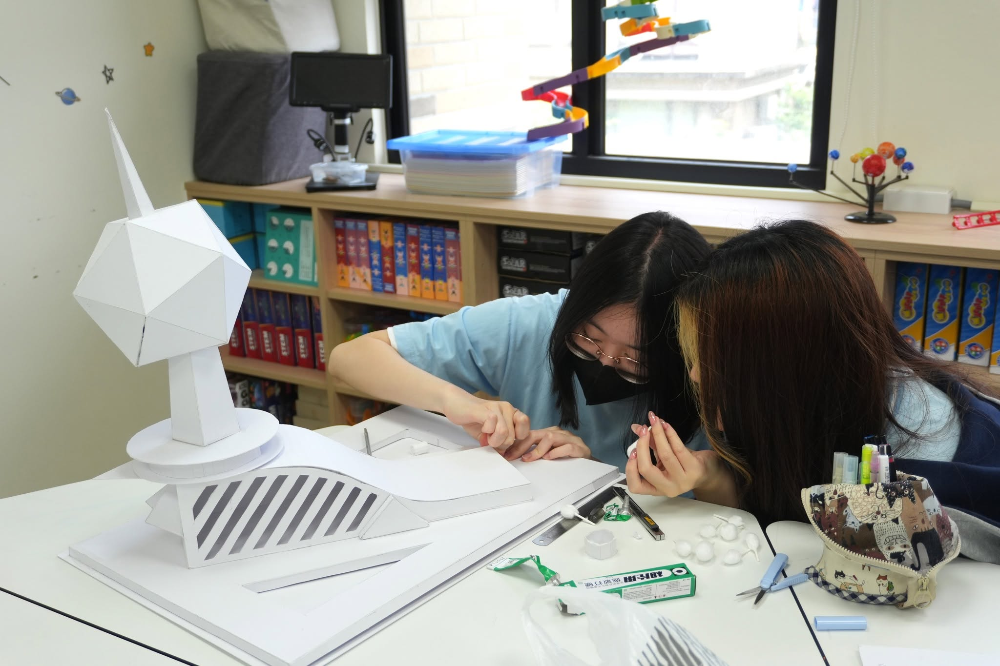

背生字、刷考卷，
就能保證孩子未來的競爭力嗎？

翰科實驗小學 116學年度招生說明會
HANKEL EXPERIMENTAL ELEMENTARY SCHOOL
在 AI 時代，
別讓標準答案限制了
孩子的想像力
小學六年的黃金啟蒙期，翰科以「多語 × 科研 × 遊藝」，培養孩子帶得走的好奇心、獨立思考與跨界實踐力。
立即預約｜實小招生說明會WHY ELEMENTARY EDUCATION MATTERS
世界變化這麼快，
小學階段最該給孩子什麼？
知識隨手可得，真正珍貴的，是孩子面對未知時，仍願意主動提問、獨立判斷，並一步步把想法化為行動。
如何讓孩子保有愛玩的好奇心，
也建立自主學習的專注與紀律？

OUR BELIEF
在翰科，我們不提前透支孩子的學習胃口，而是為他裝上探索世界的翅膀。
小學教育的核心，不只在於累積知識，更在於為一生的學習奠定底層能力。
保持好奇CURIOSITY
敏於感受AWARENESS
獨立思考INDEPENDENT THINKING
堅韌不拔RESILIENCE
CROSS-DISCIPLINARY LEARNING
超越傳統課本！
翰科小學四大跨域特色課程
從語言表達、科研實作，到全球視野與身心素養，讓學習跨出課本，也連結真實世界。

01
雙語閱讀與戲劇表達BILINGUAL LITERACY & DRAMA
結合美國 CCSS 與本土素養教材，跳脫死背單字。從繪本、小說探究到戲劇角色詮釋，讓語言成為思考與表達的自然工具。
02
STEAM 創新科研與科技INNOVATION LAB
從真實生活問題出發，透過觀察、提問、實驗到程式邏輯設計；在動手「做中學」的歷程中，建立科學思維與解決問題的能力。

03
全球公民與社會實踐GLOBAL CITIZENSHIP & SDGs
融入聯合國永續發展目標，結合主題探究、在地體驗與校外跨文化交流，拓展國際視野，也培養理解他人的同理心。
04
全人遊藝與身心素養ARTS & WELLNESS
一年級起推動專業分級游泳與多元體育，奠定健康體魄；結合藝術探索與學院制度，讓孩子在團隊合作中建立自信與歸屬感。
A PLACE TO GROW
在充滿啟發的校園裡，
看見每個孩子發光的模樣
精緻小班 × 雙語浸潤
兼顧個別差異，讓每個孩子都被看見、被理解，也獲得適切的引導。
現代化探索空間
結合自然光感與科技設備的學習教室，以及專業運動與藝文場域。
學習的本質不是競爭，而是一次次的自我超越。
我們陪伴孩子在愛與尊重中，養成一輩子受用的探索好奇心與內在驅動力。
ADMISSIONS INFORMATION SESSION
邀請您走進翰科，
為孩子開啟不設限的未來起點
辦學理念深度解析解鎖小學跨域課程設計
沉浸式校園環境導覽親自體驗國際級教學場域
家長諮詢與交流解答小學入學與未來升學路徑